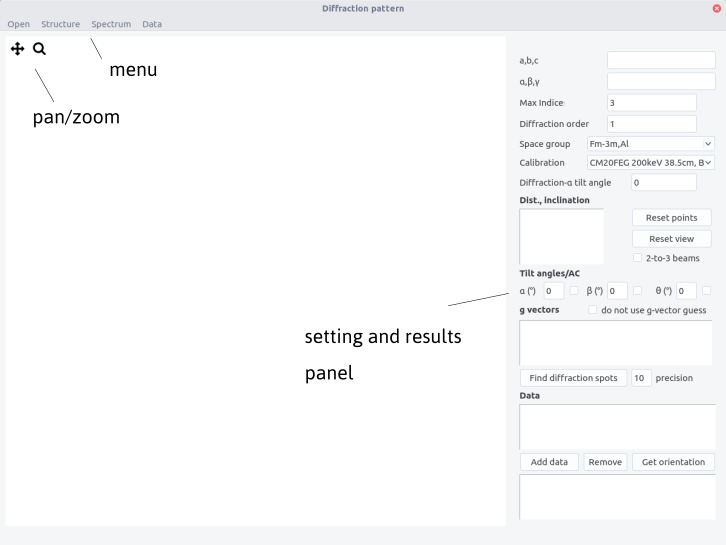

Diffraction
diffraction allows to determine orientation from a set of diffraction patterns.
Introduction¶
Determining orientation from diffraction patterns requires to collect and identify a set of diffraction vectors \vec{q}. When using this approach, we assume that the diffraction vector is in Bragg condition, which is fulfill at least in a two beam orientation. This often needs to tilt the specimen. Alternatively we present in Kikuchi a method based on Kikuchi lines.
Consider an electronic wave scattered by a crystal plane (h,k,l) corresponding to a diffraction vector \vec{q}. Its amplitude and phase is given by:
where the sum is made on all the atoms j placed at \vec{r}_j in the unit cell.
The intensity recorded is thus:
For a given crystal, the wave intensity will depend both on the \vec{q}\cdot\vec{r} and on the atomic form factor f_j.
Systematic extinctions
Extinctions for specific (h,k,l) diffracted planes are expected if: $$ \sum_{j=1}^N e^{- 2i\pi (h \cdot x_j + k \cdot y_j + l \cdot z_j)}=0 $$ For fcc cubic crystals, with atoms placed at (x_j,y_j,z_j)= (0, 0, 0), (0.5, 0.5, 0) ,(0, 0.5, 0.5), (0.5, 0, 0.5), this condition is fulfilled when (h,k,l) are of different parity
The atomic form factor f_j corresponds to the amplitude of the wave diffracting on a single atom. In the range of scattering vectors between 0\leq q \leq 25 \mathring{A}^{-1}, the atomic form factor can be approximated by a Gaussian decomposition:
where the values of a_i, b_i, and c_i can be found for every atoms for instance here
The position and the name of atoms are defined in the space_group.txt file following the scheme:
Name Atom name1 x1 y1 z1 Atom name1 x2 y2 z2 ... Atom name2 x3 y3 z3
The atomic factor is defined in the scattering.txt file according to the scheme:
Atom name1 a1 b1 a2 b2 a3 b3 a4 b4 c ...
Diffraction pattern in TEM¶
When a plane electronic wave is scattered by a crystal under a given orientation, a spot diffraction pattern is formed in the back focal plane of the objective lens. The spots correspond to different diffraction vectors \vec{q}, the intensity of the pattern depending both on the crystal lattice and its orientation (see stereoproj). In diffraction, we only use the structure factor as a guide to identify diffraction spots.
Thus, an electron wave traveling in the direction -z will be diffracted by an angle \theta given by the Bragg law:
\lambda being the wavelength, d the inter-reticular spacing and n the diffraction order (corresponding to parallel diffraction vectors n(h,k,l)).
Diffracted spots will be located at a given distance r from the transmitted beam and at a given angle \eta from a fixed direction, chosen here as the y axis.

The observed/recorded pattern will depend on:
-
the magnification due to intermediate and projection lenses. The distance r measured will thus depend on the value of L called the camera length, given by $$ L=\frac{rd}{n\lambda} $$ As a consequence, the pattern will depend on the acceleration voltage, through the wavelength.
-
the rotation, by an angle \xi, between the \alpha-tilt axis which defines the y axis in the holder reference frame, and the y axis on the pattern.
Calibration and operating conditions¶
The diffraction pattern needs to be carefully calibrated on the microscope used. Use a crystal with known lattice parameters and record a diffraction pattern, ideally forming rows or a zone axis with a large value of n. For every camera length and acceleration voltage, measure r in pixels corresponding to d in angstrom.
The calibration are set in the calibration.txt file following the scheme:
Microscope_name voltage camera length binning r.d ...
For diffraction, only the value r . d is necessary, the other fields are informative.
Interface¶
The interface is composed of a top bar menu, a plotting area to display diffraction pattern and a setting/results panel.

Indexing a diffraction pattern¶
Crystal structure can be imported from the structure menu. This menu can be populated by adding structures in the structure.txt files following the template:
Name a(A) b(A) c(A) alpha beta gamma space group
The space group is defined in the space_group.txt file and with the scattering.txt file as defined above.
Alternatively, the structure can be set by filling the a,b,c and \alpha, \beta, \gamma fields.
Procedure¶
-
Open a diffraction pattern. Make sure that the file name does not contain non-ASCII character.
-
Define a calibration in the
Calibrationsbox -
Set the
Diffraction alpha y-axis angle(see stereoproj ) -
Left click on a diffraction spot. Zoom in to ensure a higher precision.
-
Click again on a second spot corresponding to the diffraction order n.
-
Indicate the order n in the
diffraction orderfield. -
Click
reset vieworreset pointif needed

-
The distance d (A) and the inclination angle \eta are indicated in the Dist, Inclination box.
-
Indicate a value in px in the
precisionbox. The g-vectors will be chosen within the uncertainty range \pm the precision. By default, the value is 10 px. -
Click on
Find diffraction spotsto identify the spot . The results appear in the g vectors box with the schemeThe angles values are explained below to determine orientation from a set of diffraction vectors.d(A) | h,k,l | Intensity(arb. units) | angles
The data (h,k,l), the inclination angle \eta and the tilt angles, can be used to plot stereographic projection from a diffraction vector
Orientation from a set of diffraction vectors¶
If a set of diffraction vectors are given, the orientation can be retrieved knowing the position of the vectors in the sample coordinates s (see below regarding ambiguities). Given the direction X in the crystal c coordinates:
where
are the the g-vectors in the crystal coordinates and D^\ast is defined here, and:
are the g-vectors in the sample coordinates.
The coordinates x_i,y_i,z_i are obtained by appropriate rotation in the sample coordinates. For a double tilt holder, with no angle between the vertical direction and the \alpha-tilt axis, the coordinates of the diffraction vector i is:

Example of a tilt sequence in a double tilt holder. The recorded diffraction vector (1,1,1) is obtained after rotating along x of an angle \beta=-20, then along \alpha=10. The inclination made on diffraction pattern with the \alpha-tilt axis (here along the y direction) is \eta=40.
The equations
lead to:
The above equation defines the crystal orientation, so that A should be a rotation matrix. The closest Euler rotation matrix R can be found with the approach proposed by Mackenzie 1 using singular value decomposition:
The Euler angles are retrieved from the R matrix:
180° ambiguity
When the inputs g-vectors are coplanar, the retrieved orientation may suffer the 180° ambiguity.
The situation described on the left side of the figure below is ambiguous. In this case, the 180° rotation along g_3 leads two different crystal orientations. On the contrary, the right side of the figure is not ambiguous, as the 180° rotation along (0\bar{1}1) is a crystal symmetry.
Same ambiguities can arise when indexing zone axes that present a 180° rotational symmetry which does not exist in the crystal.
In diffraction ambiguous results can be detected.
Thus for every diffraction patterns, the diffraction vector, inclination angle, and tilt angles need to be provided.
-
Fill the tilt angles fields. Tick the box to indicate that rotation is anti-clockwise.
-
Click and
Find diffraction spots -
Select both the dist, inclination field and the appropriate g vector. For the first condition, the indices of the g-vector can arbitrary be chosen.
-
Press
Add data. A line appearsalpha angle, beta angle, theta angle, inclination, h,k,l. Data can be removed by selecting the line and by pressingRemove data. -
Repeat the above operations for at least 2 diffraction spots. For every conditions, the angle between the proposed g-vectors and the already chosen g-vectors are indicated. Choose the (h,k,l) indices that minimize all the angles.
-
Then select the data lines and press
Get orientation
The result box shows:
phi1, phi, phi2 (Euler angles), mean angular deviation, mean square angular deviation
Two sets of phi1, phi, phi2 angles are displayed if the results are ambiguous.
The accuracy of the result is given by:
- The
mean angular deviation, which is the average angle between each diffraction vector computed from the Euler angles and the experimental values:
where \vec{g}_i is the normalized diffraction vector corresponding to the (h_i,k_i,l_i) plane.
- In the approach to find R, the
mean square angular deviation, \langle \theta_d^2 \rangle, is minimized. This value should then be as small as possible.
Import/Export data¶
Using the Data menu, data can be imported and results exported.
Data sets are provided in a .txt file using the following scheme
# Diffraction data file alpha_1,beta_1,theta_1,eta_1,h_1,k_1,l_1 ... alpha_N,beta_N,theta_N,eta_N,h_N,k_N,l_N
Exporting data will write in a .txt file, adding to the above datasets:
# Results # Phi1,Phi,Phi2 # phi_1,phi, phi_2 # Mean angular deviation, Mean square angular dev. # ang_d, ang_d^2
# sign will not be read during import.
Spectrum¶
Spectra, i.e. peak intensity with respect to the d-spacing, can be plotted from the top menu. The maximum indices should be indicated.

-
J. Mackenzie, Acta Cryst. 1957, 10, 61. ↩